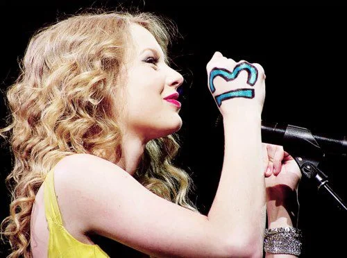

TAYLOR SWIFT
CURIOSIDADES :
Veja Abaixo Algumas curiosidades sobre Taylor Swift
1. Ela cresceu em uma fazenda repleta de árvores de Natal
Taylor Swift afirmou, através de um tuíte feito em 2019, que cresceu em uma fazenda de árvores de Natal. Divulgando a canção de Natal “Christmas Tree Farm”, ela escreveu: “Na verdade, eu cresci em uma fazenda de árvores de Natal. Em uma casa de biscoitos de gengibre, nas profundezas da deliciosa floresta de goma de mascar.
2. Produziu uma música de Natal remetendo à infância
Taylor divulgou sua primeira, e única, música de Natal em 2019, intitulada “Christmas Tree Farm”. A canção foi escrita e produzida por Taylor em parceria com Jimmy Napes. A composição fala sobre suas memórias de Natal na infância, em que viveu na fazenda.
3. Já escreveu um livro!
Em entrevista à revista GQ, ela contou que escreveu um livro aos 14 anos de idade – e que ainda existe um exemplar, com seus pais. A obra foi nomeada como “Girl Named Gir” (Garota Chamada Garota, em tradução livre) e é sobre uma mãe que deu à luz uma filha, mas desejava ter um filho.
4. …e um roteiro de filme (ainda em andamento)
Em dezembro de 2022, a Searchlight Pictures, estúdio de cinema, divulgou que um filme com direção e roteiro por Taylor Swift está em andamento. Ainda não há mais informações sobre a produção.
5. Taylor Swift já atuou em filmes e series
Para além dos clipes de música, Taylor Swift já atuou em alguns filmes, através de uma pequena participação. Foram eles: “Hannah Montana – O Filme” (2009), “Idas e Vindas do Amor” (2010), dubladora em “O Lorax: Em Busca da Trúfula Perdida” (2012), “O Doador de Memórias” (2014), “Cats” (2019) e “Amsterdam” (2022). Taylor Swift participou da 9ª temporada de CSI: Crime Scene Investigation como a adolescente rebelde Haley Jones.
6. Seus gatos tem nomes de personagens de produções que ela gosta
Taylor Swift tem três gatos: Meredith, Olivia e Benjamin Button. Os nomes dos felinos são especiais e escolhidos a dedo pela cantora, já que correspondem a personagens da ficção que ela gosta. Meredith é inspirada na personagem da série “Greys Anatomy”, Olivia por conta da série “Law & Order: SVU” e Benjamin por causa do protagonista do filme “O Curioso Caso de Benjamin Button”
7. Sua avó era cantora de ópera
Taylor Swift se inspira muito na trajetória de sua avó materna, Marjorie Finlay. Ela foi cantora de ópera e se apresentava em concertos. Taylor chegou a lançar uma canção homônima a avó em 2020, em seu álbum “Evermore”.
8. Taylor não foi para a faculdade, mas recebeu um diploma importante
Em 2022, Taylor Swift recebeu um diploma como Doutora em Belas Artes pela Universidade de Nova York (NYU). O diploma, no entanto, é honorário, oferecido para pessoas que se destacam em sua área de atuação, ainda que não tenham feito um curso superior para tal.
9. As Faixas 5 dos álbuns são especiais
Taylor tem uma tradição curiosa em todos os seus álbuns. A faixa 5 dos discos é sempre dedicada às música mais triste do projeto.
10. Compôs para outros artistas – incluindo hit de Calvin Harris
A loirinha também já compôs músicas para outros artistas, como “Better Man”, para Little Big Town, “You’ll Always Find Your Way Back Home”, para a série Hannah Montana e a mais famosa “This Is What You Came For”, sob o pseudônimo de Nils Sjoberg, para Calvin Harris e Rihanna
11. Talento secreto de Taylor Swift
Durante sua entrevista para a Vogue em 2016, a artista disse que tem um talento bizarro secreto: os cotovelos com articulação dupla. Ou seja, que dobram para frente e para trás. Isso é capaz de manter a pessoa com cotovelos estranhamente flexíveis.
12. Recordista no Grammy
Taylor Swift é a única artista feminina a ganhar o Grammy de Álbum do Ano por quatro vezes, com o “Fearless” (2009), “1989” (2014), “Folklore” (2020) e "Midnights" (2022).

13. Supersticiosa com o número 13
Para a MTV em 2009, Taylor Swift afirmou que o número 13 é seu amuleto da sorte e que já rolaram vários fatos curiosos com ele. “Eu nasci no dia 13. Fiz 13 anos em uma sexta-feira 13. Meu primeiro álbum ganhou disco de ouro em 13 semanas. Minha primeira música número 1 teve uma introdução de 13 segundos. Cada vez que ganhei um prêmio, fiquei sentada no 13º assento, na 13ª fila, na 13ª seção ou na fila M, que é a 13ª letra”, contou ao veículo.
